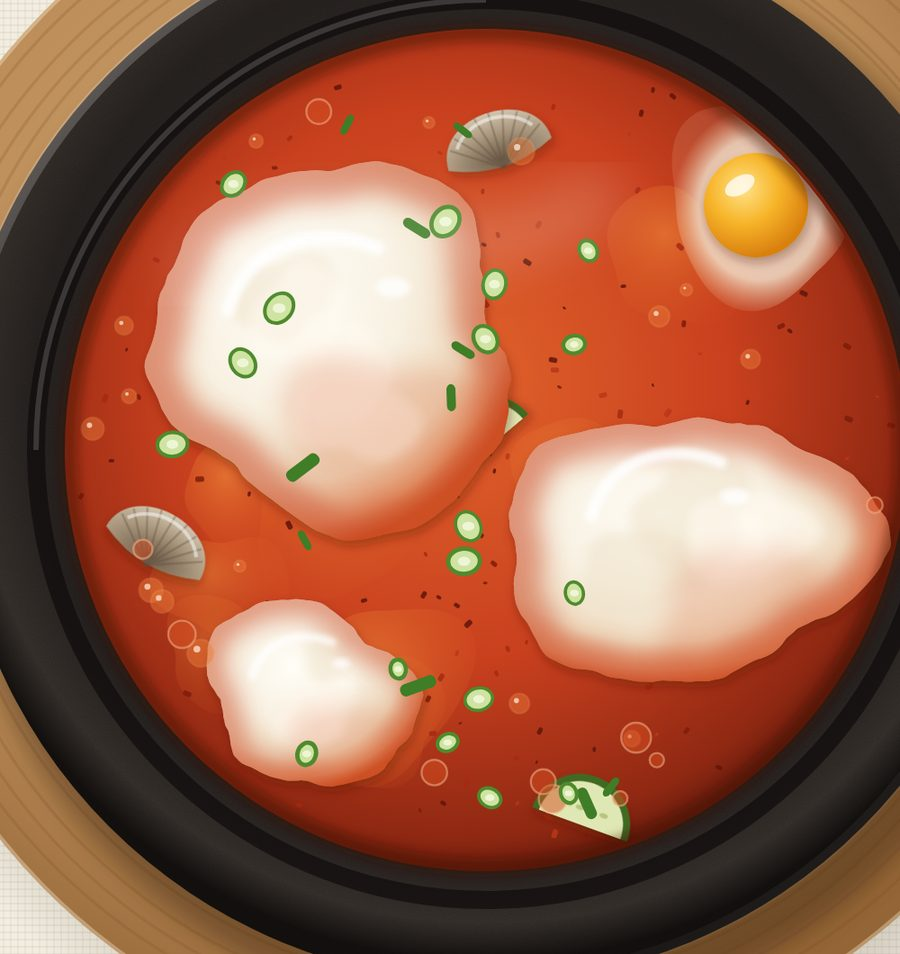
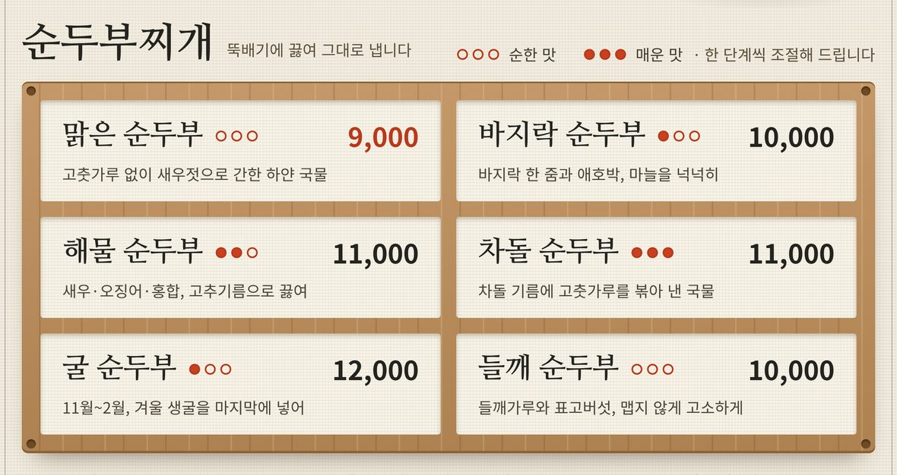

메뉴판 디자인 · SD-MN56
이 디자인으로 상담하기
간수당 순두부 아침마다 콩을 갈아 간수로 굳히는 동네 두부집 · 한국어 · 원화
A4 세로 · 1페이지콩물 아이보리 · 두부틀 소나무 · 고추기름 주홍나무 받침 위 뚝배기 일러스트
![간수당 순두부 메뉴판 전체. 면포 결이 비치는 아이보리 바탕에 얇은 이중 테두리가 있고, 왼쪽 위에 '아침 일곱 시, 그날 간 콩으로 문을 엽니다'와 큰 명조체 가게 이름 간수당, 순두부·모두부·콩비지, 콩을 맷돌에 갈아 간수로 굳힌다는 짧은 소개와 찌개에 밥·반찬 세 가지·날달걀이 포함된다는 안내가 있습니다. 오른쪽 위 모서리에는 나무 받침에 올린 검은 뚝배기를 위에서 본 큰 그림이 종이 밖으로 걸쳐 있고, 붉은 국물에 반쯤 잠긴 커다란 흰 순두부 세 덩어리, 가장자리 쪽 날달걀 노른자, 바지락 두 개, 애호박, 송송 썬 파와 기름방울이 떠 있습니다. 가운데에는 소나무 두부틀 모양의 나무 틀 안 여섯 칸에 맑은 순두부 9,000원(주홍색 가격), 바지락 10,000원, 해물 11,000원, 차돌 11,000원, 굴 12,000원, 들깨 10,000원이 맵기 0~3 점 표시와 함께 들어 있습니다. 아래에는 두부 한 모, 곁들임·마실 것, 두부 사 가기 세 단의 가격표와 영업시간, 자리표시 연락처가 있습니다.](page1.png)

뚝배기 한 그릇위에서 내려다본 뚝배기 하나로 이 집이 무엇을 끓이는지 바로 보이게 했습니다.

두부틀 여섯 칸두부를 굳히는 나무 틀 모양 칸에 찌개 여섯 가지를 넣고, 맵기는 점 세 개로 표시했습니다.
이 메뉴판의 구성
- 색은 콩물, 소나무 두부틀, 고추기름에서 가져왔습니다
- 주홍색은 맵기 점과 대표 찌개 가격에만 씁니다
- 포장 두부 판매와 미리 맡겨 두기 안내를 따로 두었습니다
- 큰 글씨와 점선 구분으로 벽이나 테이블에서도 읽기 쉽습니다